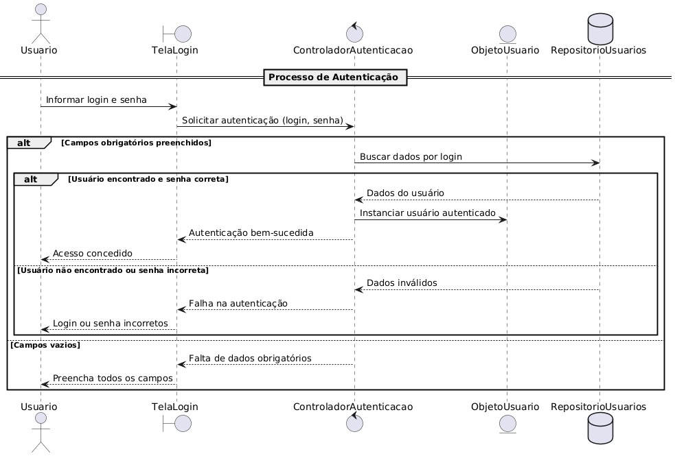

Sistema de Gerenciamento de Chaves
Diagramas de Sequência - Documentação Técnica
23
Casos de Uso
7
Módulos
100%
Cobertura
Autenticação
CU01 - Autenticar Usuário
Diagrama
Código

CU01
@startuml
actor Usuario
participant "Interface" as UI
participant ":Usuario" as USR
Usuario -> UI: Inserir login e senha
UI -> USR: validarCredenciais(login, senha)
USR -> USR: verificarSenha(senha)
alt Credenciais válidas
USR --> UI: autenticacaoSucesso()
UI --> Usuario: Acesso liberado
else Credenciais inválidas
USR --> UI: autenticacaoFalhou()
UI --> Usuario: Mensagem de erro
end
@enduml
Gerenciamento de Usuários
CU02.1 - Criar Usuário
Diagrama
Código

CU02.1
@startuml
actor Administrador
participant "Interface" as UI
participant ":Usuario" as USR
Administrador -> UI: Inserir dados do usuário
UI -> USR: criar(nome, login, senha, nivelAcesso)
USR -> USR: validarDados()
alt Dados válidos
USR -> USR: salvar()
USR --> UI: usuarioCriado(sucesso)
UI --> Administrador: Usuário criado com sucesso
else Dados inválidos
USR --> UI: erroValidacao(mensagem)
UI --> Administrador: Exibir mensagem de erro
end
@enduml
CU02.2 - Consultar Usuário
Diagrama
Código

CU02.2
@startuml
actor Administrador
participant "Interface" as UI
participant ":Usuario" as USR
Administrador -> UI: Buscar usuário
UI -> USR: buscar(filtros)
USR -> USR: obterLista(filtros)
USR --> UI: listaUsuarios
UI --> Administrador: Exibir lista de usuários
@enduml
CU02.3 - Alterar Usuário
Diagrama
Código

CU02.3
@startuml
actor Administrador
participant "Interface" as UI
participant ":Usuario" as USR
Administrador -> UI: Selecionar usuário para editar
UI -> USR: obter(idUsuario)
USR --> UI: dadosUsuario
UI --> Administrador: Exibir dados para edição
Administrador -> UI: Alterar dados e confirmar
UI -> USR: atualizar(novosDados)
USR -> USR: validarDados()
alt Dados válidos
USR -> USR: salvar()
USR --> UI: usuarioAtualizado(sucesso)
UI --> Administrador: Usuário atualizado com sucesso
else Dados inválidos
USR --> UI: erroValidacao(mensagem)
UI --> Administrador: Exibir mensagem de erro
end
@enduml
CU02.4 - Inativar Usuário
Diagrama
Código

CU02.4
@startuml
actor Administrador
participant "Interface" as UI
participant ":Usuario" as USR
Administrador -> UI: Selecionar usuário para inativar
UI -> USR: inativar(idUsuario)
USR -> USR: verificarDependencias()
alt Sem dependências
USR -> USR: setStatus(inativo)
USR -> USR: salvar()
USR --> UI: usuarioInativado(sucesso)
UI --> Administrador: Usuário inativado com sucesso
else Com dependências
USR --> UI: erroInativacao(mensagem)
UI --> Administrador: Não é possível inativar - usuário possui registros
end
@enduml
Gerenciamento de Locais
CU03.1 - Criar Local
Diagrama
Código

CU03.1
@startuml
actor Administrador
participant "Interface" as UI
participant ":Local" as LOC
Administrador -> UI: Inserir dados do local
UI -> LOC: criar(nome, descricao)
LOC -> LOC: validarDados()
alt Dados válidos
LOC -> LOC: salvar()
LOC --> UI: localCriado(sucesso)
UI --> Administrador: Local criado com sucesso
else Dados inválidos
LOC --> UI: erroValidacao(mensagem)
UI --> Administrador: Exibir mensagem de erro
end
@enduml
CU03.2 - Consultar Local
Diagrama
Código

CU03.2
@startuml
actor Administrador
participant "Interface" as UI
participant ":Local" as LOC
Administrador -> UI: Buscar locais
UI -> LOC: buscar(filtros)
LOC -> LOC: obterLista(filtros)
LOC --> UI: listaLocais
UI --> Administrador: Exibir lista de locais
@enduml
CU03.3 - Alterar Local
Diagrama
Código

CU03.3
@startuml
actor Administrador
participant "Interface" as UI
participant ":Local" as LOC
Administrador -> UI: Selecionar local para editar
UI -> LOC: obter(idLocal)
LOC --> UI: dadosLocal
UI --> Administrador: Exibir dados para edição
Administrador -> UI: Alterar dados e confirmar
UI -> LOC: atualizar(novosDados)
LOC -> LOC: validarDados()
alt Dados válidos
LOC -> LOC: salvar()
LOC --> UI: localAtualizado(sucesso)
UI --> Administrador: Local atualizado com sucesso
else Dados inválidos
LOC --> UI: erroValidacao(mensagem)
UI --> Administrador: Exibir mensagem de erro
end
@enduml
CU03.4 - Excluir Local
Diagrama
Código

CU03.4
@startuml
actor Administrador
participant "Interface" as UI
participant ":Local" as LOC
Administrador -> UI: Selecionar local para excluir
UI -> LOC: excluir(idLocal)
LOC -> LOC: verificarSetores()
alt Sem setores associados
LOC -> LOC: remover()
LOC --> UI: localExcluido(sucesso)
UI --> Administrador: Local excluído com sucesso
else Com setores associados
LOC --> UI: erroExclusao(mensagem)
UI --> Administrador: Não é possível excluir - local possui setores
end
@enduml
Gerenciamento de Setores
CU04.1 - Criar Setor
Diagrama
Código

CU04.1
@startuml
actor Administrador
participant "Interface" as UI
participant ":Setor" as SET
participant ":Local" as LOC
Administrador -> UI: Inserir dados do setor
UI -> SET: criar(nome, descricao, idLocal)
SET -> LOC: verificarExistencia(idLocal)
LOC --> SET: localExiste
alt Local existe
SET -> SET: validarDados()
SET -> SET: salvar()
SET --> UI: setorCriado(sucesso)
UI --> Administrador: Setor criado com sucesso
else Local não existe
SET --> UI: erroValidacao(mensagem)
UI --> Administrador: Exibir mensagem de erro
end
@enduml
CU04.2 - Consultar Setor
Diagrama
Código

CU04.2
@startuml
actor Administrador
participant "Interface" as UI
participant ":Setor" as SET
Administrador -> UI: Buscar setores
UI -> SET: buscar(filtros)
SET -> SET: obterLista(filtros)
SET --> UI: listaSetores
UI --> Administrador: Exibir lista de setores
@enduml
CU04.3 - Alterar Setor
Diagrama
Código

CU04.3
@startuml
actor Administrador
participant "Interface" as UI
participant ":Setor" as SET
Administrador -> UI: Selecionar setor para editar
UI -> SET: obter(idSetor)
SET --> UI: dadosSetor
UI --> Administrador: Exibir dados para edição
Administrador -> UI: Alterar dados e confirmar
UI -> SET: atualizar(novosDados)
SET -> SET: validarDados()
alt Dados válidos
SET -> SET: salvar()
SET --> UI: setorAtualizado(sucesso)
UI --> Administrador: Setor atualizado com sucesso
else Dados inválidos
SET --> UI: erroValidacao(mensagem)
UI --> Administrador: Exibir mensagem de erro
end
@enduml
CU04.4 - Excluir Setor
Diagrama
Código

CU04.4
@startuml
actor Administrador
participant "Interface" as UI
participant ":Setor" as SET
Administrador -> UI: Selecionar setor para excluir
UI -> SET: excluir(idSetor)
SET -> SET: verificarChaves()
alt Sem chaves associadas
SET -> SET: remover()
SET --> UI: setorExcluido(sucesso)
UI --> Administrador: Setor excluído com sucesso
else Com chaves associadas
SET --> UI: erroExclusao(mensagem)
UI --> Administrador: Não é possível excluir - setor possui chaves
end
@enduml
Gerenciamento de Chaves
CU05.1 - Criar Chave
Diagrama
Código

CU05.1
@startuml
actor Administrador
participant "Interface" as UI
participant ":Chave" as CHV
participant ":Setor" as SET
Administrador -> UI: Inserir dados da chave
UI -> CHV: criar(nome, descricao, idSetor)
CHV -> SET: verificarExistencia(idSetor)
SET --> CHV: setorExiste
alt Setor existe
CHV -> CHV: validarDados()
CHV -> CHV: salvar()
CHV --> UI: chaveCriada(sucesso)
UI --> Administrador: Chave criada com sucesso
else Setor não existe
CHV --> UI: erroValidacao(mensagem)
UI --> Administrador: Exibir mensagem de erro
end
@enduml
CU05.2 - Consultar Chave
Diagrama
Código

CU05.2
@startuml
actor Administrador
participant "Interface" as UI
participant ":Chave" as CHV
Administrador -> UI: Buscar chaves
UI -> CHV: buscar(filtros)
CHV -> CHV: obterLista(filtros)
CHV -> CHV: obterStatus()
CHV --> UI: listaChaves
UI --> Administrador: Exibir lista de chaves com status
@enduml
CU05.3 - Alterar Chave
Diagrama
Código

CU05.3
@startuml
actor Administrador
participant "Interface" as UI
participant ":Chave" as CHV
Administrador -> UI: Selecionar chave para editar
UI -> CHV: obter(idChave)
CHV --> UI: dadosChave
UI --> Administrador: Exibir dados para edição
Administrador -> UI: Alterar dados e confirmar
UI -> CHV: atualizar(novosDados)
CHV -> CHV: validarDados()
alt Dados válidos
CHV -> CHV: salvar()
CHV --> UI: chaveAtualizada(sucesso)
UI --> Administrador: Chave atualizada com sucesso
else Dados inválidos
CHV --> UI: erroValidacao(mensagem)
UI --> Administrador: Exibir mensagem de erro
end
@enduml
CU05.4 - Excluir Chave
Diagrama
Código

CU05.4
@startuml
actor Administrador
participant "Interface" as UI
participant ":Chave" as CHV
Administrador -> UI: Selecionar chave para excluir
UI -> CHV: excluir(idChave)
CHV -> CHV: verificarStatus()
alt Chave disponível
CHV -> CHV: remover()
CHV --> UI: chaveExcluida(sucesso)
UI --> Administrador: Chave excluída com sucesso
else Chave emprestada
CHV --> UI: erroExclusao(mensagem)
UI --> Administrador: Não é possível excluir - chave está emprestada
end
@enduml
Empréstimos e Devoluções
CU06 - Registrar Empréstimo de Chave
Diagrama
Código

CU06
@startuml
actor Funcionario
participant "Interface" as UI
participant ":RegistroLocacao" as REG
participant ":Chave" as CHV
Funcionario -> UI: Selecionar chave para empréstimo
UI -> CHV: verificarDisponibilidade(idChave)
CHV --> UI: statusDisponibilidade
alt Chave disponível
UI -> Funcionario: Solicitar dados do locador
Funcionario -> UI: Inserir dados do locador
UI -> REG: registrarEmprestimo(idChave, locador, usuarioOperacao)
REG -> REG: criarRegistro()
REG -> CHV: atualizarStatus(emprestada)
REG -> REG: salvar()
REG --> UI: emprestimoRegistrado(sucesso)
UI --> Funcionario: Empréstimo registrado com sucesso
else Chave indisponível
CHV --> UI: chaveIndisponivel(mensagem)
UI --> Funcionario: Chave não está disponível
end
@enduml
CU07 - Registrar Devolução de Chave
Diagrama
Código

CU07
@startuml
actor Funcionario
participant "Interface" as UI
participant ":RegistroLocacao" as REG
participant ":Chave" as CHV
Funcionario -> UI: Selecionar chave para devolução
UI -> CHV: verificarStatus(idChave)
CHV --> UI: statusChave
alt Chave emprestada
UI -> REG: buscarEmprestimoAtivo(idChave)
REG --> UI: dadosEmprestimo
UI -> Funcionario: Confirmar dados do locador
Funcionario -> UI: Confirmar devolução
UI -> REG: registrarDevolucao(idEmprestimo, usuarioOperacao)
REG -> REG: atualizarRegistro()
REG -> CHV: atualizarStatus(disponivel)
REG -> REG: salvar()
REG --> UI: devolucaoRegistrada(sucesso)
UI --> Funcionario: Devolução registrada com sucesso
else Chave não emprestada
CHV --> UI: chaveNaoEmprestada(mensagem)
UI --> Funcionario: Chave não está emprestada
end
@enduml
Consultas e Relatórios
CU08 - Consultar Histórico de Movimentações
Diagrama
Código

CU08
@startuml
actor Funcionario
participant "Interface" as UI
participant ":RegistroLocacao" as REG
Funcionario -> UI: Aplicar filtros de busca
UI -> REG: consultarHistorico(filtros)
REG -> REG: buscarMovimentacoes(filtros)
REG --> UI: listaMovimentacoes
UI --> Funcionario: Exibir histórico de movimentações
@enduml
CU09 - Consultar Chaves Emprestadas
Diagrama
Código

CU09
@startuml
actor Funcionario
participant "Interface" as UI
participant ":RegistroLocacao" as REG
participant ":Chave" as CHV
Funcionario -> UI: Consultar chaves emprestadas
UI -> REG: obterEmprestimosAtivos()
REG -> REG: buscarEmprestimosAtivos()
REG --> UI: listaEmprestimos
UI -> CHV: obterDadosChaves(listaChaves)
CHV --> UI: dadosChaves
UI --> Funcionario: Exibir chaves emprestadas
@enduml
CU10 - Gerar Relatórios de Movimentação
Diagrama
Código

CU10
@startuml
actor Funcionario
participant "Interface" as UI
participant ":RegistroLocacao" as REG
participant "GeradorRelatorio" as GR
Funcionario -> UI: Selecionar tipo de relatório e filtros
UI -> REG: obterDadosRelatorio(filtros)
REG -> REG: buscarMovimentacoes(filtros)
REG --> UI: dadosRelatorio
UI -> GR: processarDados(dadosRelatorio, tipoRelatorio)
GR --> UI: relatorioProcessado
UI -> GR: exportarRelatorio(formato)
GR --> UI: arquivoRelatorio
UI --> Funcionario: Download do relatório
@enduml